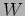

Next:
Environmental Prediction Model -
Up:
Scheduler Component Architecture (SCA)
Previous:
Intro and rational
Contents
SCA Components
Subsections
Environmental Prediction Model - (
)
Weather prediction model -()
Execution timing (
) and feasibility (
) models
Steve Fraser 2008-01-31